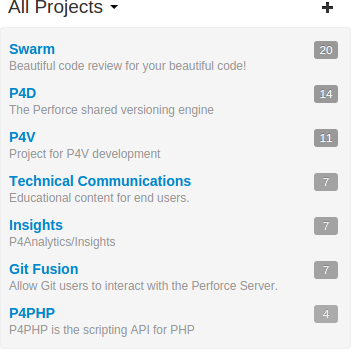
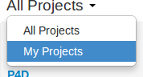
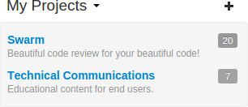
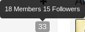
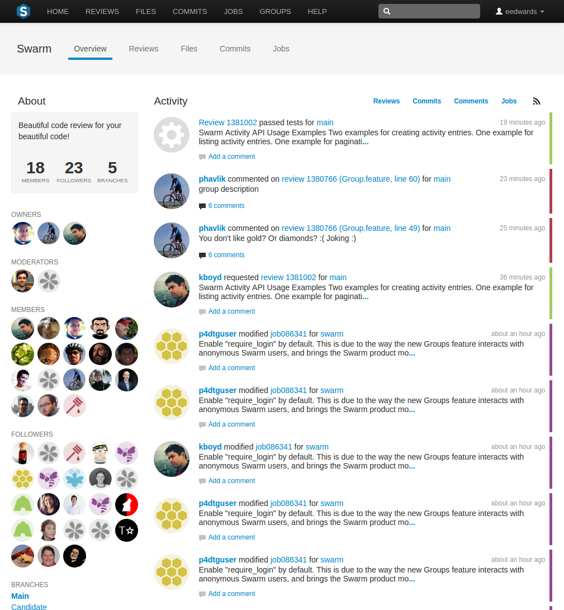
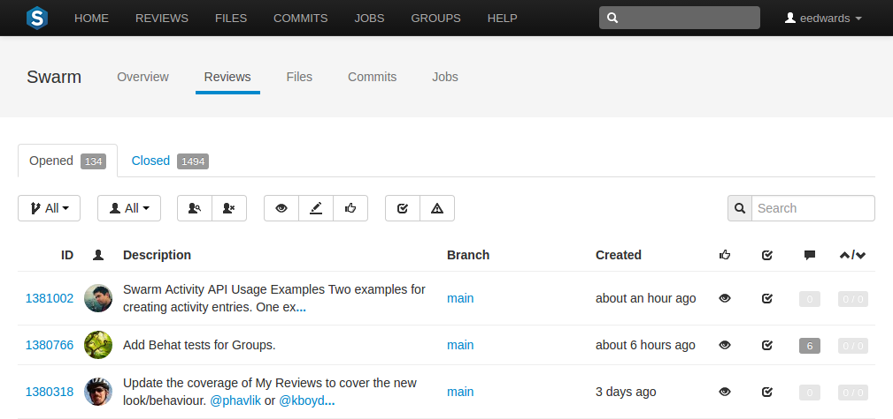
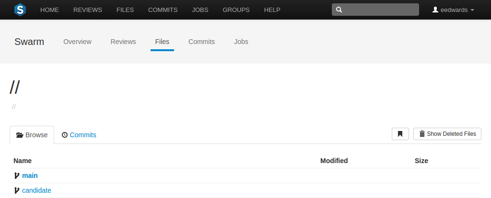
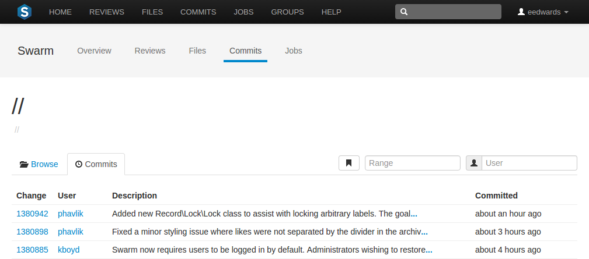
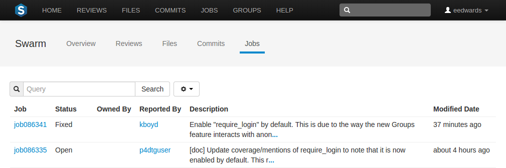
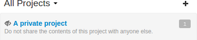

Projects
A Swarm project is a group of Perforce users who are working together on one or more codelines within the Helix Versioning Engine. A project's definition includes one or more branches of code, and optionally a job filter, automated test integration, or automated deployment. This section provides an introduction to the interactions users have with projects. See the “Projects” chapter for details on managing projects.
Projects are listed on the Swarm home page. Anonymous users see a list of all public projects:

Logged-in users can choose to display all projects or just the projects in which they are a member:


 The head icon with following number represents how many members and followers exist for each project. Hover your mouse over the project count to display a tooltip with the number of members and followers.
Viewing a project
View a project by clicking on its project name or branch identifier in an activity stream, or by visiting the URL:
https://myswarm.url/projects/project-name

A project's page provides the following information:
-
A description of the project
-
A list of members
-
A list of the project's followers
-
A list of the branches defined for the project
-
The project's activity stream
Reviews
The project's tab shows a list of code reviews specific to the project.

For more details on browsing, filtering, and searching reviews, see Review queues.
Files
 The project's tab shows a list of the
project's files, starting with a folder view representing each branch.
Branches are designated with the branch icon.
The project's tab shows a list of the
project's files, starting with a folder view representing each branch.
Branches are designated with the branch icon.

The project's main branch, identified by using a name such as main, mainline, master, trunk, is sorted to the top of the list of branches and appears in bold. The list of names can be configured; see Mainline branch identification for details.
For more information on browsing files, see Files.
Commits
The project's tab shows a list of changes made to the project.

For more details on history browsing, see Commits.
Jobs
The project's tab shows a list of jobs associated with the project. This only works properly when the project configuration includes a job filter. See Add a project for details.

For more details on browsing and searching jobs, see Jobs.
Private projects
Private projects, introduced in Swarm 2016.2, provide a way to make specific projects and their activity less visible to Swarm users. When a project is made private, only the projects owners, moderators, and members, plus users with admin or super privileges in the Helix Versioning Engine, can see the project, its activity streams and ongoing reviews.
If you are logged in as an owner, moderator, or member of a private Swarm project, that project appears on the Swarm home page with an eye icon to indicate that it is private and has limited visibility:

Similarly, the eye icon appears beside the project's title when viewing the project:

 When you hover your mouse over the eye icon, a tooltip
appears indicating that this project is indeed private.
When you hover your mouse over the eye icon, a tooltip
appears indicating that this project is indeed private.
Caveats
The following are important caveats regarding private projects:
-
While Swarm can mask the existence of projects, their activity, and reviews, Swarm honors each user's access to files within the Helix Versioning Engine. This means that have access to the files in a private project's branches can browse to those branch paths within the depot and see the files and any committed changes.
If you need to prevent access to important files, your Helix Versioning Engine administrator is required to manage the protections table accordingly. For more information, see the section Authorizing Access in the Helix Versioning Engine Administrator Guide: Fundamentals.
-
It is possible for a user to start a review that touches files that belong to a private project. If the user is not a member, owner, or moderator of the private project, or does not have admin or super privileges in the Helix Versioning Engine, they cannot participate in the review.
-
If a user is not a member, owner, or moderator of a private project, or does not have admin or super privileges in the Helix Versioning Engine, and they are added as a review participant (via an @mentions or by editing a review's participants) to a review containing files within the private project's branches, that user cannot participate in the review: the user cannot see the review, its files, or comments. Due to limitations in how Swarm sends email notifications, such users could still receive notifications for reviews they cannot participate in.
-
Notifications usually include links and mentions of the associated projects. Notifications involving private projects are filtered to remove any references to those private projects.